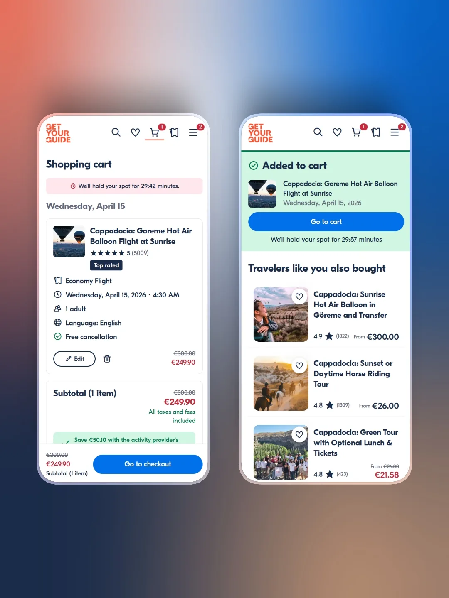

Founder led product has stopped scaling
You are the product manager, the CEO and the sales lead. Decisions wait for you, and the team builds what is easiest to specify instead of what moves the metric. Someone has to own the product function.
9+ years turning ambiguous, data heavy problems into products people trust: discovery and opportunity identification, strategy, roadmapping and prioritisation, ownership of the outcome, and the design and delivery that follow. At GetYourGuide, ING, WPP and Crowdhouse, in product teams of three to thirty. As a product lead or lead product designer in your organisation, or on an independent engagement when that is what the problem needs.
9+ years turning ambiguous, data-heavy problems into products people trust: checkout, onboarding, design systems, dashboards.
You are the product manager, the CEO and the sales lead. Decisions wait for you, and the team builds what is easiest to specify instead of what moves the metric. Someone has to own the product function.
Everything on the list is reasonable, nothing is prioritised by evidence. I bring the discipline of measuring before deciding and killing what does not pay, and I stay until the number moves.
After a reorganisation, ahead of a launch that cannot slip, or because the team has outgrown its founders. I take ownership of the product, its roadmap and its design direction, whether that is a permanent seat or a defined engagement.
Product opportunity assessment. Two weeks to understand the business opportunity, identify what should be built, define an initial scope, name the risks and dependencies, and recommend an execution approach. It stands on its own and it is how most engagements start, whether what follows is a build, a product lead in the team or nothing at all.
Start with the assessment →The team was optimising the wrong step. 38% of converters left checkout and came back with no re-entry experience. Ten experiments later: +11% conversion across four EU markets.
Read the case study →
All three, and the work is the same: I take responsibility for product outcomes. As a product lead or lead product designer in your organisation, as a contractor for a defined period, or independently on a scoped engagement through my own firm. The format follows the problem, not the other way round.
Two weeks inside your data and your customers, and a roadmap of outcomes with the first experiments shipped. For independent work, scoped by days per week with a fixed number after a first conversation.
Hybrid. I am based near Zurich and come on site for workshops, kickoffs and the moments where being in the room matters. The rest is remote.
Both. I run discovery and roadmap, and I stay through design and delivery. I design the flows and the interface myself, and on Acervo I shipped the software myself with AI agent teams; with your team I lead the people who do.
A consultant diagnoses and recommends. A product lead owns outcomes inside the team. I do the second, which includes the first, whichever contract it sits on.
English and Spanish, both at working level for product and stakeholder work.
Tell me where the product is stuck. Thirty minutes, no deck; I will tell you how I would approach it and whether I am the right person.
Build, lead and optimize are three dimensions of one product practice, with hands-on design in all of them. The case studies show the same person doing each.